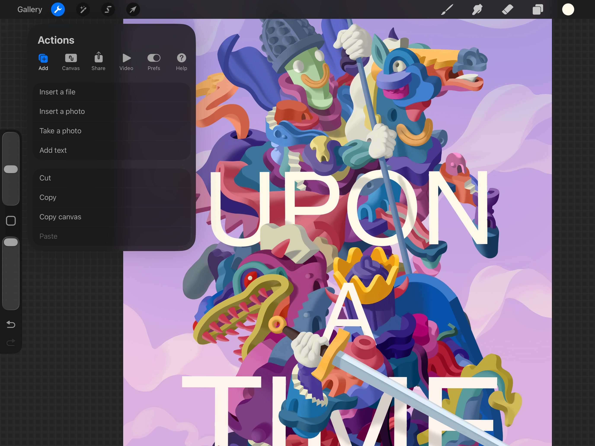
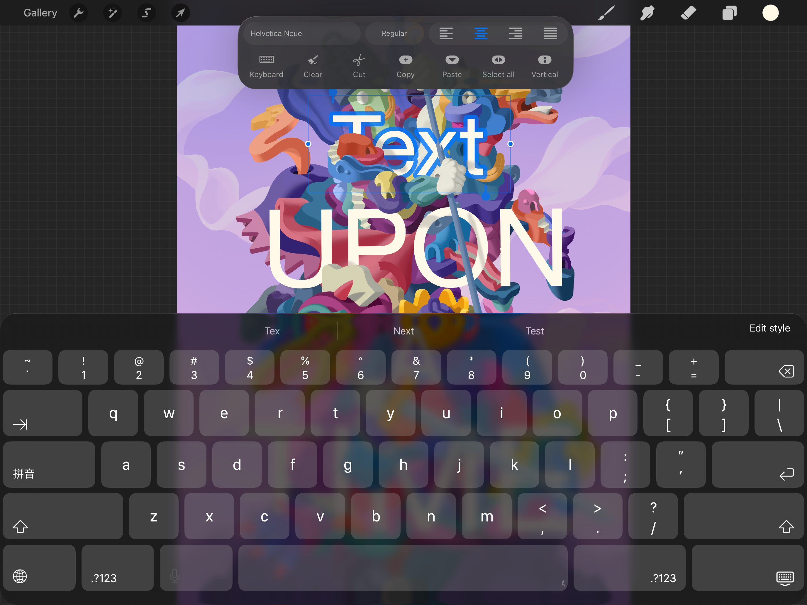
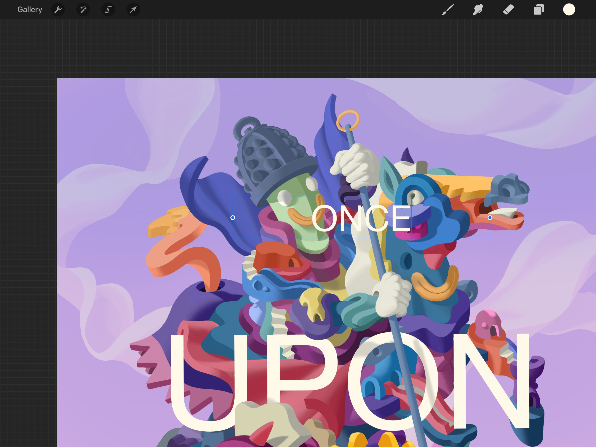
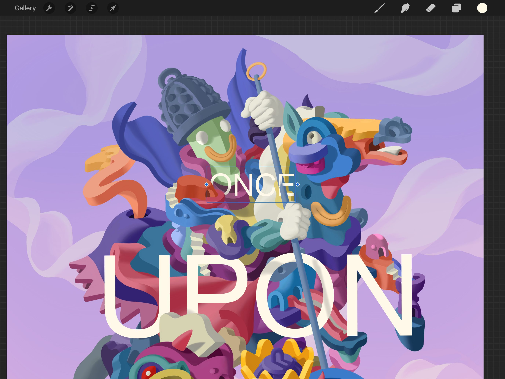
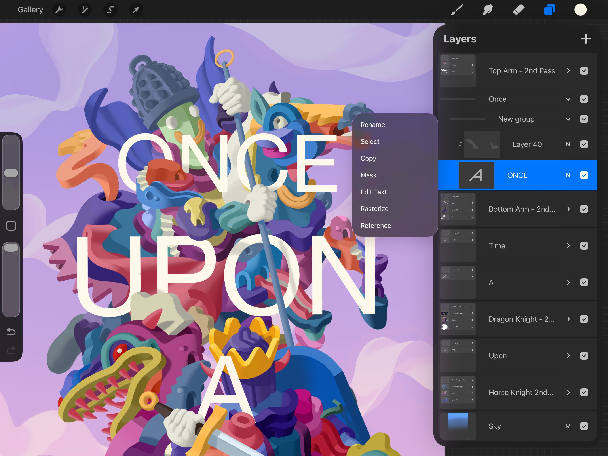

📖 Đã dịch sang tiếng Việt. Thuật ngữ chuyên môn giữ tiếng Anh — rê chuột để xem nghĩa (tooltip).
Interface and Basics
Thêm Text (văn bản), và truy cập mọi công cụ kiểu chữ bạn cần trong một bảng điều khiển đa năng.
Kiến thức cơ bản về Text
Thêm và chỉnh sửa nội dung Text ở định dạng vector sắc nét. Di chuyển và thay đổi kích thước hộp Text, rồi chuyển kết quả sang đồ họa raster để thêm vào tác phẩm.
Thêm Text
Thêm Text vào tác phẩm của bạn chỉ bằng một chạm.


Chạm Actions (hành động) > Add (thêm) > Add Text.
Một khung bao chứa chữ Text sẽ hiện ra trên khung vẽ của bạn. Văn bản xuất hiện theo màu đang chọn và dùng phông chữ mặc định của Procreate là Helvetica Neue.
Chỉnh sửa Text
Dùng Bàn phím (Keyboard) để gõ vào hộp Text hoặc dùng Apple Pencil để viết tay (Scribble).

Khi bạn thêm Text mới vào khung vẽ, chữ Text đã được bôi đen và sẵn sàng để viết đè. Bạn có thể dùng Bàn phím iOS để gõ hoặc dùng Apple Pencil để viết tay (Scribble) nội dung mới.
Hộp Text sẽ mở rộng để vừa khít với nội dung mới khi văn bản thay đổi.
Để căn lề, chọn, cắt, sao chép, dán, hoặc chọn kiểu phông chữ, hãy chạm đôi vào Text để mở Text Entry Companion (trợ lý nhập văn bản).
Để tinh chỉnh thêm phông chữ, phong cách, thiết kế và thuộc tính của văn bản, hãy chạm vào tên phông chữ trong Text Entry Companion. Thao tác này sẽ mở bảng Edit Style (chỉnh kiểu). Bạn cũng có thể chạm 'Edit Style' hoặc 'Aa' ở góc trên bên phải bàn phím để chỉnh kiểu phông chữ.
Chạm vào đây để tìm hiểu thêm về bảng Edit Style (chỉnh kiểu).
Pro Tip
To quickly select a new font you can Scribble the name of the font you want in the Font Style field and it will change automatically.
Di chuyển Text
Di chuyển Text và thay đổi kích thước khung bao quanh nó.

Để di chuyển Text, hãy kéo khung bao đang hoạt động trên khung vẽ. Khi Text vẫn ở chế độ vector (xem bên dưới), nó có thể nằm ra ngoài mép khung vẽ mà không bị cắt xén.
Đổi kích thước hộp Text
Để mở rộng hay thu hẹp hộp Text, hãy kéo các nút màu xanh ở hai bên khung bao.

Việc đổi kích thước hộp Text chỉ làm thay đổi hình dáng của vùng chứa. Nó không làm thay đổi hình dáng hay kích thước của văn bản bên trong hộp.
Nếu bạn thu hẹp khung bao hẹp hơn văn bản bên trong, văn bản sẽ ngắt thành nhiều dòng.
Text vector và Text raster
Giữ Text ở dạng vector sắc nét, dễ chỉnh sửa cho các thao tác cơ bản. Chuyển nó sang ảnh dạng pixel (raster) để tạo hiệu ứng phức tạp hơn.

Text vector có thể phóng to hay thu nhỏ mà không giảm chất lượng. Chế độ vector cũng cho phép bạn gõ lại và thay đổi hộp Text mà không suy giảm chất lượng.
Để dùng một số công cụ Procreate, bạn phải raster hóa (chuyển sang pixel) Text. Việc raster hóa biến văn bản thành dữ liệu pixel để bạn có thể tô vẽ, bóp méo, gộp, v.v.
Pro Tip
In the Layers panel, rasterized Text layers are normal layers, and appear as such.
Với Text vector, bạn có thể:
- Gõ nội dung mới
- Đổi phông chữ, kiểu, khoảng cách và căn lề
- Thêm hiệu ứng gạch chân, viền và chữ in hoa
Với Text vector hoặc Text raster, bạn có thể:
- Di chuyển Text
- Thực hiện biến đổi (Transform) đồng nhất
- Thay đổi độ mờ (opacity)
- Thêm Clipping Masks (mặt nạ cắt) và Layer Masks (mặt nạ lớp)
- Gộp Text với các lớp khác
Với Text raster, bạn có thể:
- Áp dụng mọi chức năng khác của Procreate lên nó, bao gồm vùng chọn (Selections), biến đổi (Transformations), chỉnh chỉnh màu (Adjustments) và gộp (Merging)
Trong bảng Layers, bạn có thể nhận biết Text vector qua chữ ‘A’ hiện trong hình thu nhỏ của lớp Text. Tên lớp cũng sẽ tự động thay đổi để phản ánh nội dung Text của nó.
Pro Tip
You can override the automatic naming of a vector Text layer. Tap the Text layer to bring up the Layer Options menu, then tap Rename.
Để raster hóa văn bản, hãy chạm vào lớp Text trong bảng Layers. Thao tác này mở menu Layer Options, nơi bạn có thể chạm Rasterize.
Still have questions?
If you didn't find what you're looking for, explore our video resources on YouTube or contact us directly. We’re always happy to help.